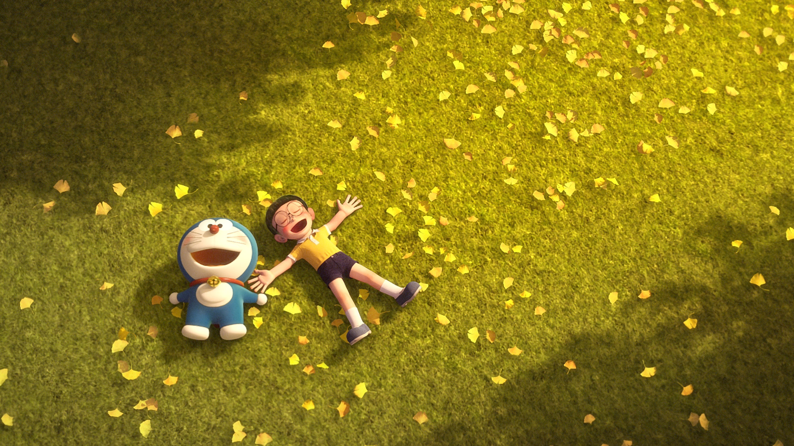

Facts
Doraemon is a fictional character in the Japanese manga and anime series of the same name.
He was created by Fujiko Fujio, the pen name of writing team Hiroshi Fujimoto and Motoo Abiko. He is a male robotic cat that travels back in time from the 22nd century to aid a preteen boy named Nobita. An "official" birth certificate for the character gives him a birth date of 3 September 2112 and lists his city of residency as Kawasaki, Kanagawa, the city where the manga was created. In 2008, Japan's Foreign Ministry appointed Doraemon the country's "anime ambassador".

Doraemon was originally conceived by Hiroshi Fujimoto following a series of three events.
When searching for ideas for a new manga, he wished a machine existed that would come up with ideas for him, he tripped over his daughter's toy, and heard cats fighting in his neighborhood. The name "Doraemon" can be translated roughly to "stray." Unusually, the name "Doraemon" (ドラえもん) is written in a mixture of two Japanese scripts: Katakana (ドラ) and Hiragana (えもん). "Dora" derives from "dora neko" (どら猫, brazen or stray cat), and is a corruption of nora (stray).